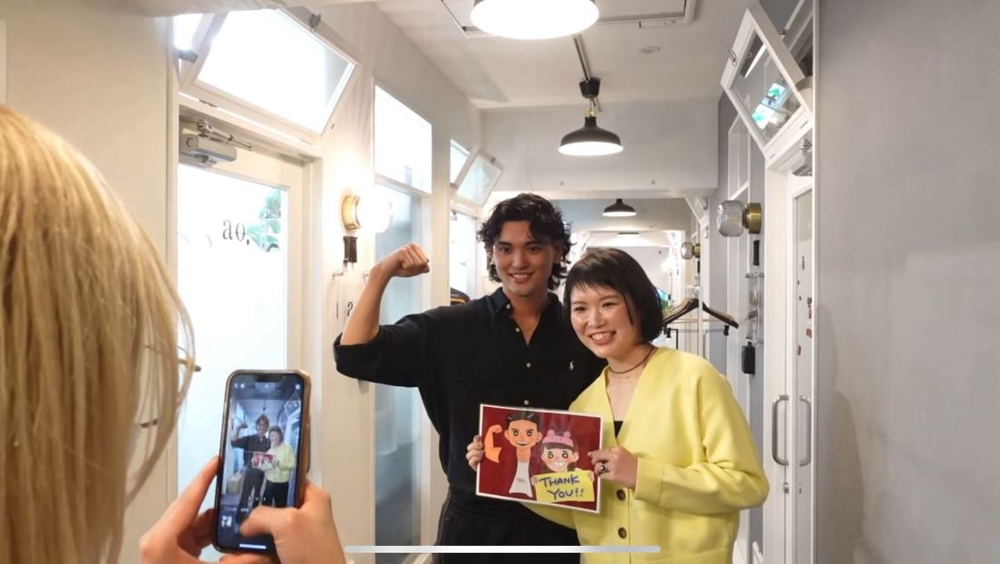
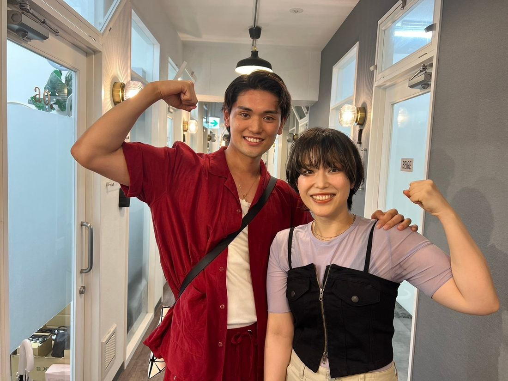

身体が変わり、目つきが変わり、
人生が動き出す。
「シンデレラは努力する」
で生まれた、本物の変化。
BEFORE → AFTER
企画代表トレーナーとして伴走した、
本物の変化の記録です。
最高の瞬間


REVIEW
パーソナルを始めて4ヶ月で約−10kg。自分だけでは続かないのが悩みでしたが、Shinさんがいることでつまずきそうな時もモチベーションを保てています。着たい服が着られるようになり、心も体も生活も良い方向に変わりました。
運動が大嫌いだった私が、オンラインで約20kgの減量に成功。「着られる服」ではなく「着たい服」を選べるようになりました。体調に合わせたトレーニングと食事アドバイスのおかげで無理なく続けられ、「どうせ無理」が「まずやってみよう」に変わったのが一番の成果です。
3ヶ月で12.9kg痩せました。Shinさんに「62キロ台で見た目が変わる」と言われ、本当に服のサイズまで変わりました。痩せた自信がつき、日々の努力が報われる体験ができて、さらに挑戦したい意欲が湧いています。